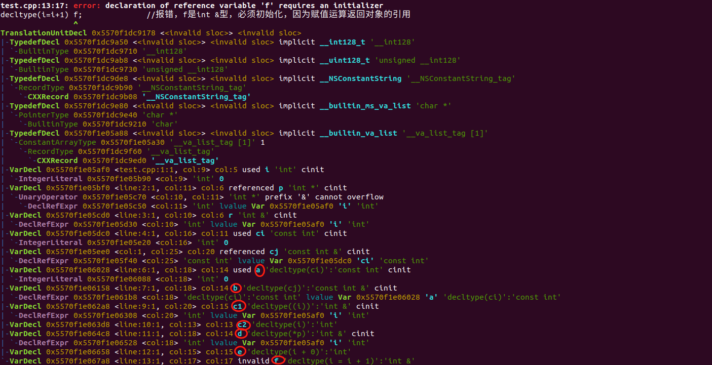

C++11 中的 auto 和 decltype 关键字
auto 关键字
在 C++ 程序中，每个变量都有自己的类型，这就要求变量在声明的时候必须清楚地知道其右侧初始值的类型。然而做到这一点并非易事，有时候甚至无法做到。在 C++11 之前的版本中，变量在声明或者初始化的时候，必须显式的指定其类型，但是在 C++11 中引入了 auto 关键字，用它可以让编译器替我们去分析初始值的类型来推算变量的类型。
auto 的语法规则
auto 是让编译器根据初始值来推断所定义的变量的类型，在 auto 的推断过程中，一般遵循四个原则：
- 同一条声明语句只能有一个基本数据类型，所以该语句中所有变量的初始基本数据类型都必须一样。
- 符号
&和*只从属于某个声明符，而非基本类型的一部分。 - 当引用被当做初始值的时候，真正用于推断 auto 类型的初始值实际上是引用对象的值。
- 当用于推断 auto 类型的初始值是常量时，如果可以忽略其常量性质，则忽略其常量性质。
1 | int i = 0; |
auto的常见用法
1、 auto 用于代替冗长复杂的变量声明
1 | // 不使用auto关键字，变量的类型冗长不宜读 |
2、auto 用于泛型编程
1 | // 在定义模板函数时，用于声明依赖模板参数的变量类型 |
decltype 关键字
有时候在编程时会遇到一种情况：希望从表达式的类型推断出要定义的变量的类型，但是不希望用该表达式的值初始化变量。C++11 针对这种情况引用了 decltype 关键字，其作用是根据表达式返回数据类型。
decltype 的语法规则
decltype 的用法：
decltype(exp) varname = value;跟据表达式推导出来的类型的必须初始化，比如说引用decltype(exp) varname;根据表达式推导出来的类型声明变量可以不初始化，比如说int
decltype 在推导类型时完全依据其括号内 exp 的类型，其所遵循的规则可以总结为三点：
- 和 auto 相比，decltype 不忽视引用和 const ，如果 exp 是一个变量的话，则 decltype(exp) 的类型和 exp 的类型完全一致，包括 const 属性和引用在内。
- 如果 exp 是一个表达式，则 decltype(exp) 的类型和表达式返回的类型一致。
- 如果 exp 加上一组括号，即 decltype((exp)) 形式，则推断的类型必然是一个引用。
1 | int i = 0; |
用 clang 语法树验证如下：

decltype 的常见用法
1 |
|
单独看 Base 类中 m_it 成员的定义，很难看出会有什么错误，但在使用 Base 类的时候，如果传入一个 const 类型的容器，编译器马上就会弹出错误信息，提示没有重载的操作符 = 。原因就在于，T::iterator 并不能包括所有的迭代器类型，当 T 是一个 const 容器时，应当使用 const_iterator。如果不使用 decltype 的话，则只能想办法把 const 类型的容器用模板特化单独处理，增加了不少工作量。但是有了 C++11 的 decltype 关键字，就可以直接这样写：
1 |
|
参考资料： 《C++ Prime》、C语言中文网